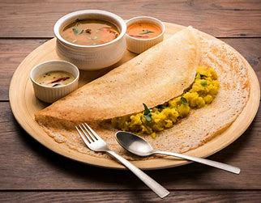
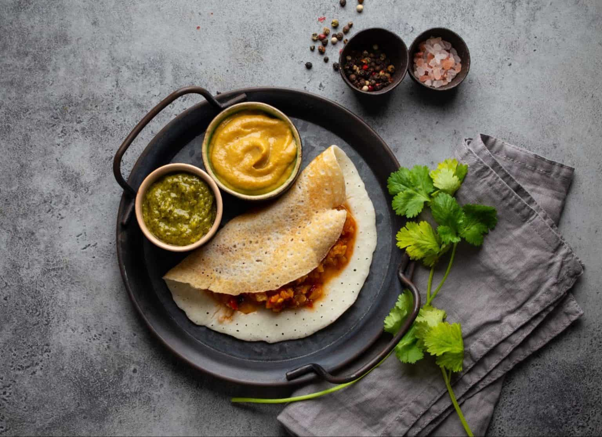

Dosas are often eaten for breakfast, but they can be enjoyed at any time of day. They are a staple food in South Indian cuisine, and there are many different variations of dosas, including masala dosa (filled with a spiced potato mixture), rava dosa (made with semolina instead of rice), and many more.
In its most simple form, dosa is crispy and crepe-like and is a very popular street food in India. Dosa is famous for its simple ingredients and savory, slightly bitter flavor. It can be eaten as a snack, breakfast, or anytime you’re in the mood for a delicious, savory meal!
A dosa is a thin savory pancake in South Indian cuisine made from a fermented batter of ground black lentils and rice. Dosas are served hot, often with chutney and sambar
.jpg)
Cut off a small piece of dosa. Stab the dosa with a fork to hold in place. Hold a knife in your other hand and cut off a small piece. You can enjoy a piece of dosa without … The piece of dosa should be small enough for a single bite. Use utensils when eating dosa in a formal environment.
.jpg)
It is the main protein compliment for vegetarian diet when paired with a starchy food like rice and is a dish that is prepared every day in most of the Indian homes.